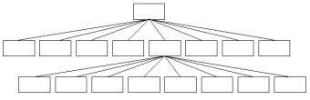
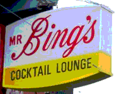
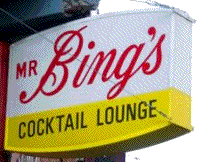
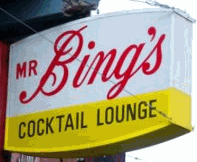

13 Jan 2003
13 Jan 2003
First Posted

Optimised Colour Reduction Using Octrees
Determining the perfect reduced colour palette for a picture
Describes the working of the Octree colour quantisation algorithm be used to create optimised colour palettes of arbitrary depth (although typically used for 256 colours) from any image and compares the results with other colour reduction methods.
The Octree Algorithm
In an Octree, the idea is to build up a memory tree which divides into 8 levels at each point. An example of the tree with the first level shown and an expansion of one object in the second level is shown below.
Typically the tree depth is set at 8 levels, which enables sufficient space to give all possible RGB values a separate object. Obviously if you did create all these objects the performance and memory requirements would be terrible, since you would need 8 objects in the first line, then 64 objects for the next line, then 512 for the next and so on (i.e. well over 16 million). Therefore elements in the tree are only constructed on demand. As you will see, the ultimate number of objects created only ever exceeds the number of colours you're reducing to by a small amount so the actual implementation is very efficient.
Each object in the tree is set up so as well as storing the links to the next objects in the tree, it can also store a summation of red, green and blue values as well as the number of pixels the sum has been done over.
The algorithm is them implemented as follows:
- Firstly, a routine to determine in which object at each level a colour should be placed is calculated. In the first level, there are eight objects to choose from. Eight objects is the equivalent of three independent on-off states (since 2^3 = 8) so we can take the high bit of each of the R,G,B values, shifting R by two bits and G by 1bit. For the next level, the same process is used but the second highest bit is taken, and so on until the there are no bits left (and you've reached the bottom of the tree.
- Next, code for creating the objects in the octree, linking them together and keeping count of how many there are is implemented.
- Finally, a procedure to reduce the tree size when too many colours are in the tree is created. This procedure starts at the very bottom of the tree. Whilst there are still too many objects in the tree, take all of the child objects of the lowest level item, and add them to the object above. Then delete all the child objects and mark the level above as the bottom of the tree.
Results
The results of the algorithm are usually fairly impressive, although for images with a large number of colours and gentle shading you will still see some artifacts of the colouring algorithm (remember that you require 16 million colours before it becomes impossible to distinguish between two adjacent colours; 256 is considerably less than that.) However, the results are considerably better than using the system default palette to achieve the effect, and aren't noticeably dithered as they are when using the Floyd-Stucci colour reduction method.
A comparison of the results on Mr Bing's Cocktail Lounge is shown below. Note that all of these images are sample areas from a larger picture which originally contained 78,800 unique colours.
Using System Defaults
As you see, the system default colour reduction method is pretty hopeless. You'll probably have seen this sort of thing happening if you've ever used a VB application splash screen where the author forgot that you might have been working a lower-colour depth system.
Using Floyd-Stucci Method and a Web-Safe Palette
I personally quite like the dithered image effect when the image detail is large enough, as the dither is often quite pleasing. However, the dither is quite noticeable in the shadow areas.
Using Octrees
The image here is the smoothest, but there are still artifacts in the detailed shadow areas owing to the lack of colour depth. The only real way around this is to use more highly stylised images (for example, by reducing the contrast) as a basis for bitmaps which need to be shown in multiple colour depths.
Implementing It in VB
Basically implementing this algorithm is something of a bitch, as is often the case with any types of Linked-List or Tree algorithm structure in VB. You can see a sample implementation put together by Brian Schimpf in the Colour Depth Control sample.